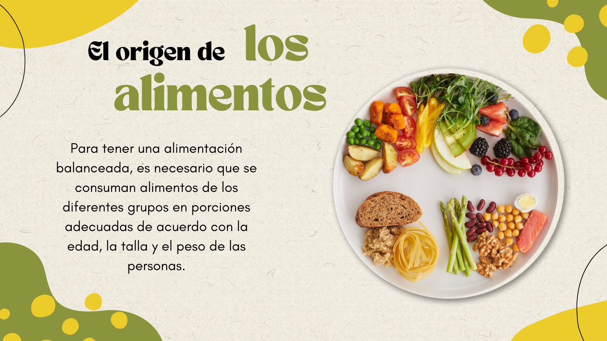
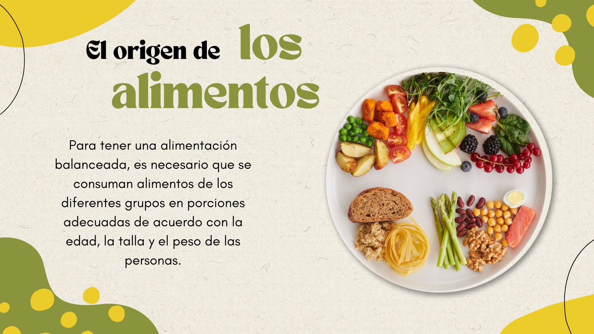
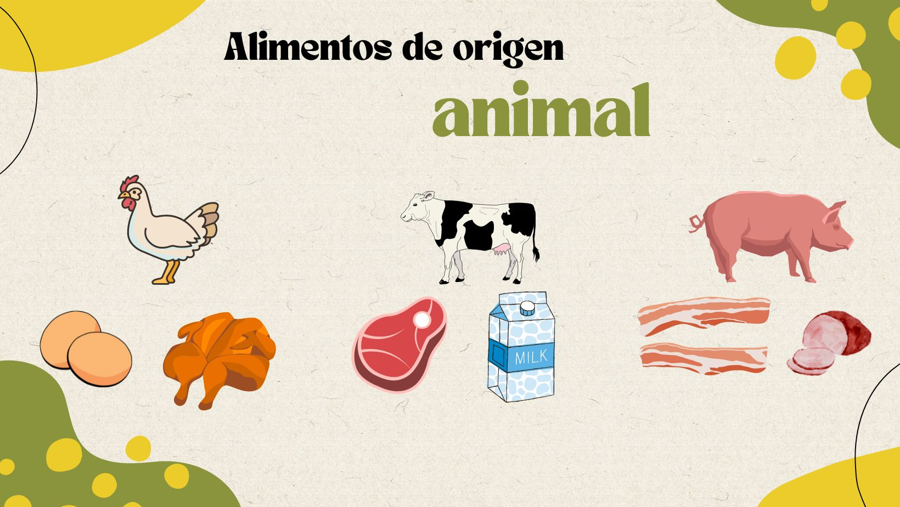
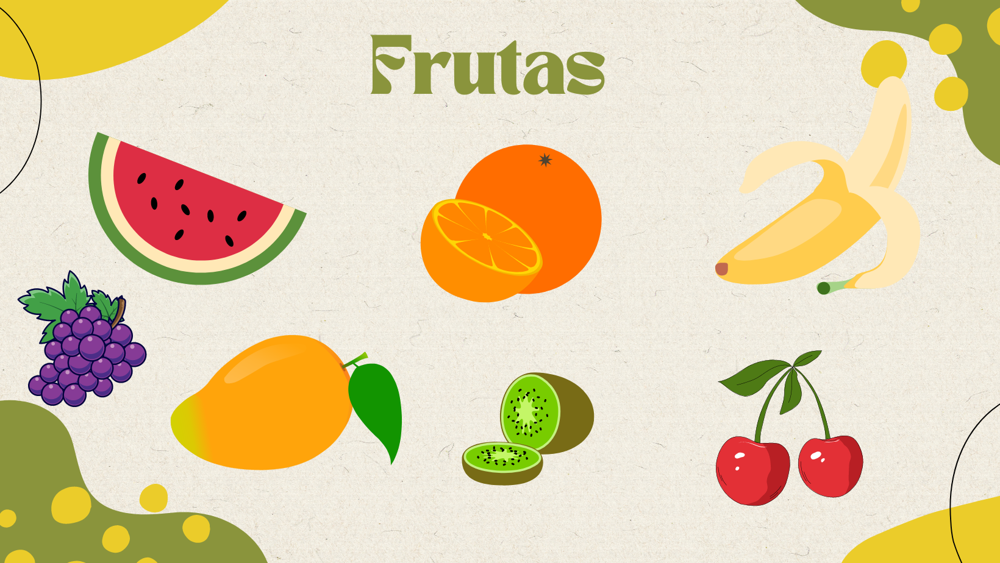
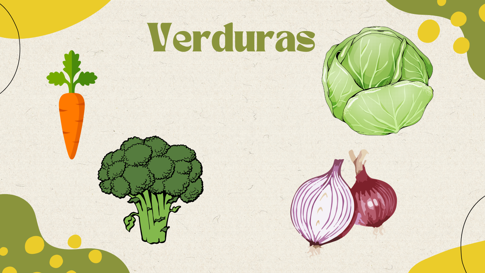
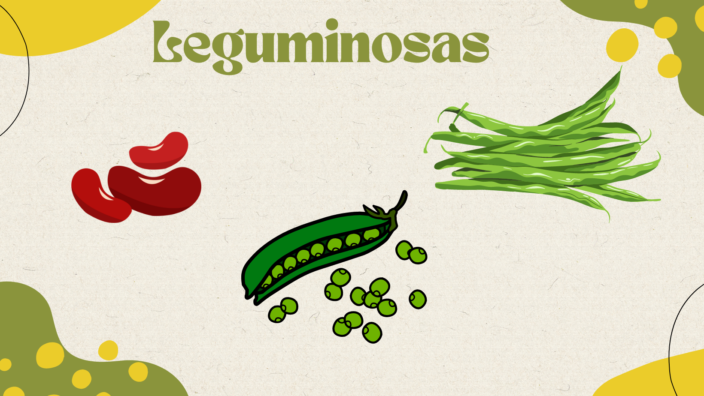
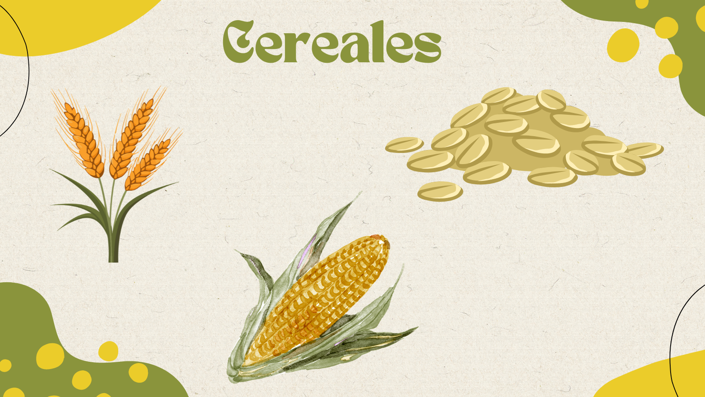

El origen de los alimentos


A continuación se muestran diferentes alimentos que se clasifican en varios grupos como frutas, verduras, leguminosas, cereales y alimentos de origen animal.


Verdolaga, quelite, huanzontle, nopal, brócoli, espinaca, espárragos, col, lechuga, berros, zanahoria, acelgas...

Frijol, haba, lenteja, garbanzo, chícharo, alubia y soya.
Maíz, trigo, avena, centeno y cebada.

Escribir una comida que casualmente consuman en casa, posteriormente agrupen los productos de su comida en los diferentes grupos que vimos en clase( frutas, verduras, leguminosas, cereales y alimentos de origen animal).
Obra publicada con Licencia Creative Commons Reconocimiento Compartir igual 4.0